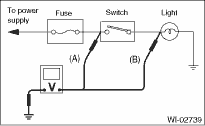
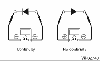
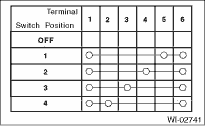
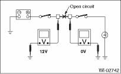
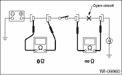
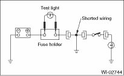
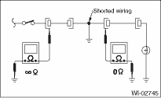

1. Using a voltmeter, connect the negative lead to a good ground point or negative battery terminal and the positive lead to the connector or component terminal.
2. Contact the positive lead of the voltmeter on connector (A). The voltmeter will indicate a voltage.
3. Shift the positive lead to connector (B). The voltmeter will indicate no voltage.

4. With the test set-up held as it is, turn the switch to ON. The voltmeter will indicate a voltage and, at the same time, the light will illuminate.
5. The circuit is in good order. If a problem such as a light failing to illuminate occurs, use the procedures outlined above to track down the malfunction.
1. Disconnect the battery terminal or connector so there is no voltage between the check points.
Contact the two leads of an ohmmeter to each of the check points.
If the circuit has diodes, reverse the two leads and check again.
2. Use an ohmmeter to check for diode continuity. When contacting the negative lead to the diode positive side and the positive lead to the negative side, there should be continuity.
When contacting the two leads in reverse, there should be no continuity.

3. The symbol“ — ” indicates that continuity exists between two points or terminals. For example, when a switch position is at “3”, continuity exists among terminals 1, 3 and 6, as shown in the table below.
— ” indicates that continuity exists between two points or terminals. For example, when a switch position is at “3”, continuity exists among terminals 1, 3 and 6, as shown in the table below.

3. HOW TO DETERMINE AN OPEN CIRCUIT
1. WITH VOLTMETER:
An open circuit is determined by measuring the voltage between respective connectors and ground using a voltmeter, starting with the connector closest to the power supply. The power supply must be turned ON so that current flows in the circuit. If voltage is not present between a particular connector and ground, the circuit between that connector and the previous connector is open.

2. WITH OHMMETER:
Disconnect all connectors affected, and check continuity in the wiring between adjacent connectors. When the ohmmeter indicates “infinite”, the wiring is open.

4. HOW TO DETERMINE A SHORT CIRCUIT
1. WITH TEST LIGHT:
Connect a test light (rated at approx. 3 watts) in place of the blown fuse and allow current to flow through the circuit. Disconnect one connector at a time from the circuit. Starting with the one located farthest from the power supply. If the test light goes out when a connector is disconnected, the wiring between that connector and the next connector (farther from the power supply) is shorted.

2. WITH OHMMETER:
Disconnect all affected connectors, and check continuity between each connector and ground. When the ohmmeter indicates continuity between a particular connector and a ground, that connector is shorted.
